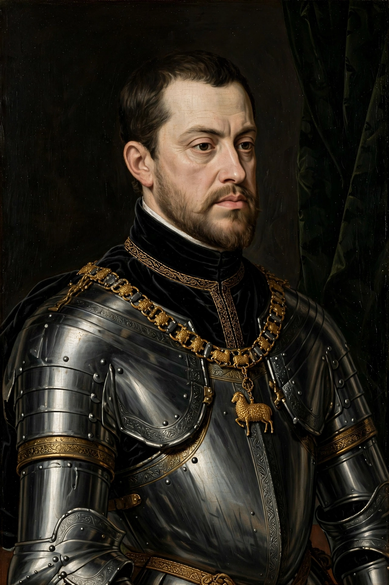

From Wikipedia, the free encyclopedia
| Philip II | |
|---|---|
 Portrait of Philip II by Sofonisba Anguissola, c. 1573 | |
| King of Spain | 16 January 1556 – 13 September 1598 |
| Predecessor | Charles I |
| Successor | Philip III |
| King of Portugal | 12 September 1580 – 13 September 1598 (as Philip I) |
| Born | 21 May 1527, Valladolid, Crown of Castile |
| Died | 13 September 1598 (aged 71), El Escorial, Spain |
| Spouses | Maria Manuela of Portugal; Mary I of England; Elisabeth of Valois; Anna of Austria |
| House | Habsburg |
| Father | Charles V, Holy Roman Emperor |
| Mother | Isabella of Portugal |
| Religion | Roman Catholic |
Philip II (Spanish: Felipe II; 21 May 1527 – 13 September 1598), also known as Philip the Prudent (el Prudente), was King of Spain from 1556, King of Portugal from 1580, and King of Naples and Sicily from 1554 until his death in 1598. He was also jure uxoris King of England and Ireland from his marriage to Queen Mary I in 1554 until her death in 1558. He was also Duke of Milan from 1554, and from 1555, Lord of the Seventeen Provinces of the Habsburg Netherlands.
The son of Emperor Charles V and Isabella of Portugal, Philip inherited his father's Spanish Empire in 1556 and succeeded to the Portuguese throne in 1580 following a dynastic crisis. The Spanish conquests of the Inca Empire and of the Philippines, named in his honour by Ruy López de Villalobos, were completed during his reign. Under Philip II, Spain reached the height of its influence and power, sometimes called the Spanish Golden Age, and ruled territories in every continent then known to Europeans. Philip led a highly debt-prone regime, seeing state defaults in 1557, 1560, 1569, 1575, and 1596. This policy was partly the cause of a declaration of independence that formed the Dutch Republic in 1581. Philip finished building the royal palace El Escorial in 1584.
Philip was born in Valladolid on 21 May 1527, the only son of Charles V and Isabella of Portugal to survive to adulthood. He was described by the Venetian ambassador as slight of stature and round-faced, with piercing eyes. In 1543 he married his double first cousin Maria Manuela of Portugal, who died in 1545 shortly after giving birth to their son, Don Carlos.
Charles V abdicated the Spanish thrones in January 1556 in favour of Philip, who had already received Naples, Sicily and Milan. From Brussels Philip governed an empire on which, it was said, the sun never set. He moved the court to Madrid in 1561 and ruled as an intensely bureaucratic monarch, working through councils and mountains of paperwork — earning the nickname el rey papelero, "the paper king".
Philip's reign was dominated by war. In the Mediterranean, Spain led the Holy League to victory over the Ottoman fleet at the Battle of Lepanto in 1571. In the Netherlands, heavy taxation, religious persecution and centralisation provoked the Dutch Revolt and the Eighty Years' War; the northern provinces abjured Philip in 1581 and formed the Dutch Republic. Relations with England deteriorated after the death of Mary I and the accession of Elizabeth I; English support for the Dutch rebels and privateering against Spanish shipping led Philip to launch the Spanish Armada in 1588, whose failure was a severe blow, though Spain remained the dominant European power for decades afterward. Philip also intervened in the French Wars of Religion in support of the Catholic League.
When King Henry of Portugal died in 1580 without an heir, Philip pressed his claim through his mother and sent the Duke of Alba to occupy the country. He was proclaimed Philip I of Portugal, uniting the Iberian Peninsula under one crown for sixty years, while promising to preserve Portuguese laws, currency and institutions.
Philip died of cancer at El Escorial on 13 September 1598, after a long and painful illness, and was succeeded by his son Philip III. Historians debate his legacy: he defended Catholic Europe against Ottoman expansion and Protestant revolt, presided over a flourishing of Spanish culture, yet left the crown deeply indebted and Spain locked into wars it could not decisively win.
See also: Spanish Empire · Habsburg Spain · Eighty Years' War